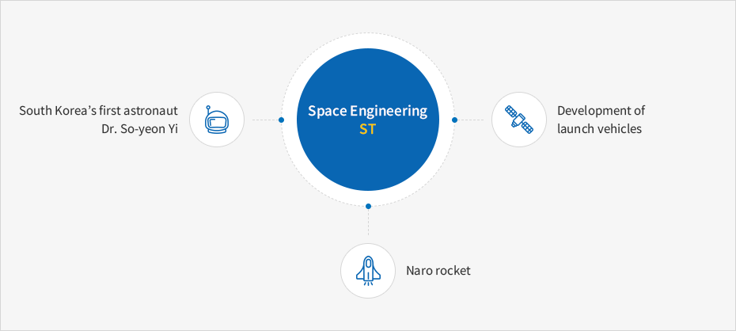

Aerospace Industries
- Home
- Major Industries
- Aerospace Industries
Aerospace Industries
There are institutions related to the aerospace industry, such as the Korea Aerospace Research Institute, Korean Air Institute of Aviation Technology, Hanwha Corporation Daejeon, and Satellite Technology Research Center in Daejeon. As the Satellite Technology Research Center successfully launched the Naro satellite in 2013, Daejeon is growing into a city that leads the aerospace industry in Korea. These institutions strengthen R & D, policy study, and global cooperation as well as conduct studies on the development of the stratoplane system, satellite system, robot engine, navigation control, etc.
In 2013, the Science Technology Satellite 3 (STSAT-3), the first Korean infrared space observation satellite, successfully communicated with the KAIST Satellite Technology Research Center, the satellite earth station in Daejeon.
Space Technology (ST)
The dream for Korea to become a country for space development comes true because of the advancement of aircrafts, satellites, and the space launch system in Daedeok.
The aerospace technology in Korea has been rapidly developing from the test-fire of KSR-Ⅲ to develop a space launch system, development of unmanned air vehicle, and development of multipurpose satellite (Arirang 2) to Korea’s first astronaut.
